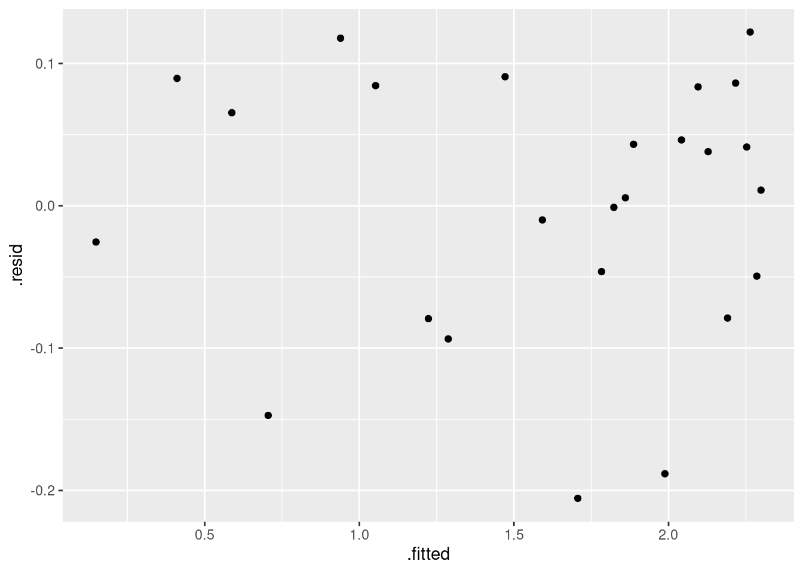

Rows: 25 Columns: 2
── Column specification ────────────────────────────────────────────────────────
Delimiter: ","
dbl (2): wind_velocity, DC_output
ℹ Use `spec()` to retrieve the full column specification for this data.
ℹ Specify the column types or set `show_col_types = FALSE` to quiet this message.
Definitely a relationship: as wind velocity increases, so does DC output. (As you’d expect.)
Is relationship linear? To help judge, geom_smooth smooths scatterplot trend. (Trend called “loess”, “Locally weighted least squares” which downweights outliers. Not constrained to be straight.)
Trend more or less linear for while, then curves downwards (levelling off?). Straight line not so good here.
Fit a straight line (and see what happens)
DC.1<-lm(DC_output ~ wind_velocity, data = windmill)summary(DC.1)
Call:
lm(formula = DC_output ~ wind_velocity, data = windmill)
Residuals:
Min 1Q Median 3Q Max
-0.59869 -0.14099 0.06059 0.17262 0.32184
Coefficients:
Estimate Std. Error t value Pr(>|t|)
(Intercept) 0.13088 0.12599 1.039 0.31
wind_velocity 0.24115 0.01905 12.659 7.55e-12 ***
---
Signif. codes: 0 '***' 0.001 '**' 0.01 '*' 0.05 '.' 0.1 ' ' 1
Residual standard error: 0.2361 on 23 degrees of freedom
Multiple R-squared: 0.8745, Adjusted R-squared: 0.869
F-statistic: 160.3 on 1 and 23 DF, p-value: 7.546e-12
Another way of looking at the output
The standard output tends to go off the bottom of the page rather easily. Package broom has these:
showing the intercept and slope and their significance.
Comments
Strategy: lm actually fits the regression. Store results in a variable. Then look at the results, eg. via summary or glance/tidy.
My strategy for model names: base on response variable (or data frame name) and a number. Allows me to fit several models to same data and keep track of which is which.
R-squared has gone up a lot, from 87% (line) to 97% (parabola).
Coefficient of squared term strongly significant (P-value \(6.59 \times 10^{−8}\)).
Adding squared term has definitely improved fit of model.
Parabola model better than linear one.
But…need to check residuals again.
Residual plot from parabola model
ggplot(DC.2, aes(y = .resid, x = .fitted)) +geom_point()
Make scatterplot with fitted line and curve
Residual plot basically random. Good.
Scatterplot with fitted line and curve like this:
ggplot(windmill, aes(y = DC_output, x = wind_velocity)) +geom_point() +geom_smooth(method ="lm", se = F) +geom_line(data = DC.2, aes(y = .fitted))
Comments
This plots:
scatterplot (geom_point);
straight line (via tweak to geom_smooth, which draws best-fitting line);
fitted curve, using the predicted DC_output values, joined by lines (with points not shown).
Trick in the geom_line is use the predictions as the y-points to join by lines (from DC.2), instead of the original data points. Without the data and aes in the geom_line, original data points would be joined by lines.
Scatterplot with fitted line and curve
`geom_smooth()` using formula = 'y ~ x'
Curve clearly fits better than line.
Another approach to a curve
There is a problem with parabolas, which we’ll see later.
Ask engineer, “what should happen as wind velocity increases?”:
Upper limit on electricity generated, but otherwise, the larger the wind velocity, the more electricity generated.
Mathematically, asymptote. Straight lines and parabolas don’t have them, but eg. \(y = 1/x\) does: as \(x\) gets bigger, \(y\) approaches zero without reaching it.
What happens to \(y = a + b(1/x)\) as \(x\) gets large?
\(y\) gets closer and closer to \(a\): that is, \(a\) is asymptote.
Fit this, call it asymptote model.
Fitting the model here because we have math to justify it.
Alternative, \(y = a + be^{−x}\) , approaches asymptote faster.
How to fit asymptote model?
Define new explanatory variable to be \(1/x\), and predict \(y\) from it.
\(x\) is velocity, distance over time.
So \(1/x\) is time over distance. In walking world, if you walk 5 km/h, take 12 minutes to walk 1 km, called your pace. So 1 over wind_velocity we call wind_pace.
Make a scatterplot first to check for straightness (next page).
R-squared, 98%, even higher than for parabola model (97%).
Simpler model, only one explanatory variable (wind.pace) vs. 2 for parabola model (wind.velocity and its square).
wind.pace (unsurprisingly) strongly significant.
Looks good, but check residual plot (over).
Residual plot for asymptote model
ggplot(DC.3, aes(y = .resid, x = .fitted)) +geom_point()

Plotting trends on scatterplot
Residual plot not bad. But residuals go up to 0.10 and down to −0.20, suggesting possible skewness (not normal). I think it’s not perfect, but OK overall.
Next: plot scatterplot with all three fitted lines/curves on it (for comparison), with legend saying which is which.
First make data frame containing what we need, taken from the right places:
R has predict, which requires what to predict for, as data frame. The data frame has to contain values, with matching names, for all explanatory variables in regression(s).
Setting up data frame to predict from
Linear model had just wind_velocity.
Parabola model had that as well (squared one will be calculated)
Asymptote model had just wind_pace (reciprocal of velocity).


Comments
geom_smoothsmooths scatterplot trend. (Trend called “loess”, “Locally weighted least squares” which downweights outliers. Not constrained to be straight.)